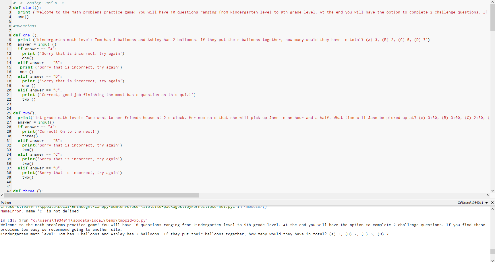
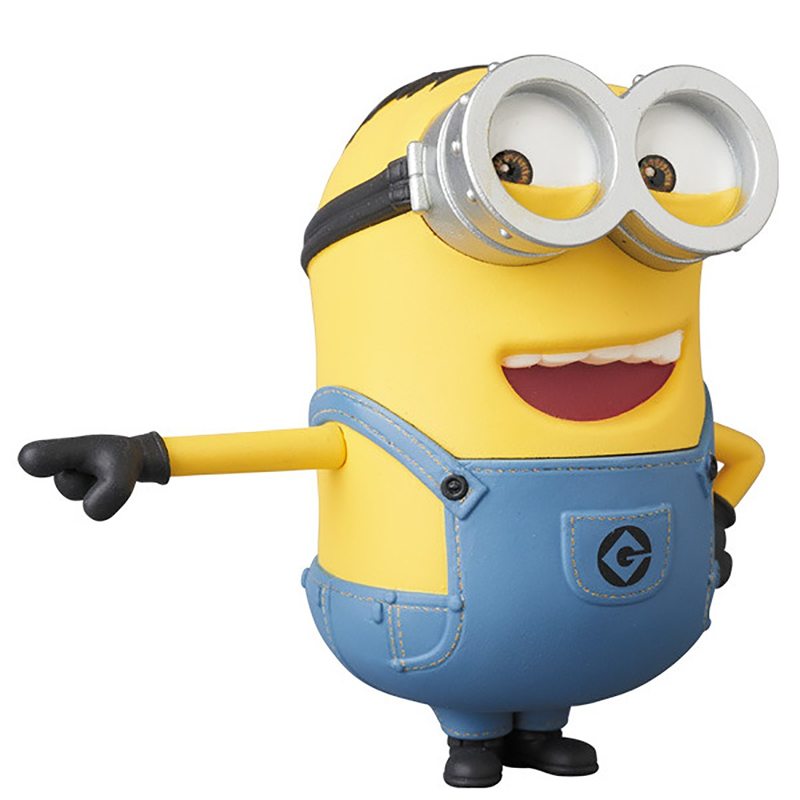
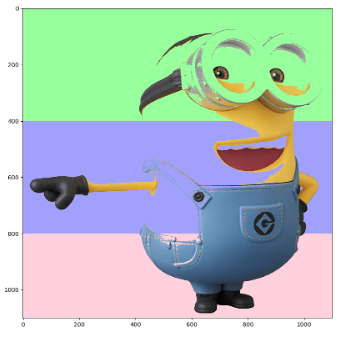
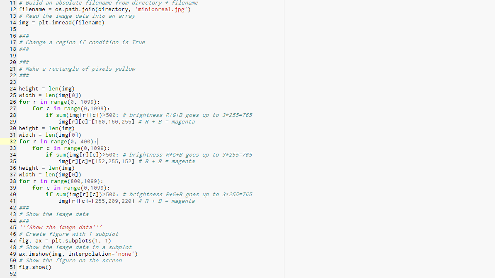
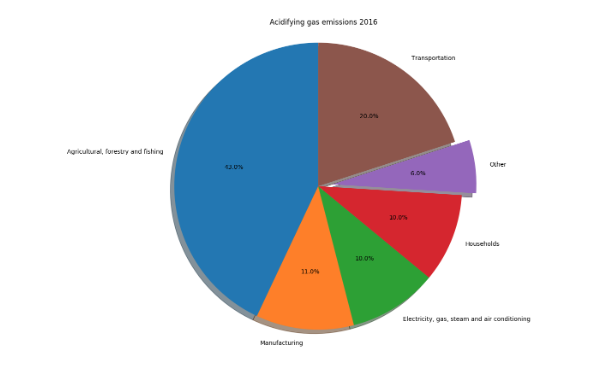
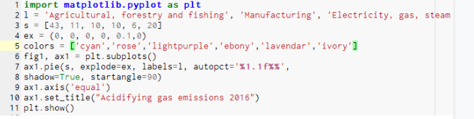

This is my game that I built from Scratch!How to play: Get Avery to the city safe from all the monsters she finds along her way. Use right key to move her to the right, left key to move her to the left, up key to move her up, and down key to move her down. If you touch any monsters you go back to the beginning. To restart just click the green flag. Good luck!! This is my preschool game that I built from MIT App Inventor!Our app is an app that helps preschoolers learn how to count and learn the alphabet. The above screenshot shows our counting section of the app. Basically the kids are given a picture of various numbers of pandas and they have to click the "answerpicker" in order to pick the correct answer. If they click the right answer the "correctlabel" says good job and the picture changes to another picture of pandas. However, if the kids get it wrong the "correctlabel" says try again and the kids cannot move on until they have the right answer! The same thing happens for the alphabet but instead the kids are given an object and they have to figure what letter the object starts with! This is our interactive fiction (named High School Musical 2.0) that we made through Python!This is a love story between a girl named Gabby and a boy named Joe. Make some decisions and find out how the two end up! This is our math practice problems game that we made through Python!

This is a game to test your math abilities. You are given problems of all levels. Good luck! This is our Image Manipulation!



On the left we have the original minion picture. In the middle we have the edited minion picture and on the right we have the code that we used to edit the original image. This is my Data Chart that I made through Python!


We got this data from a website name eurostat that showed us how much of each category contributes to air pollution. Since air pollution is a major thing and causing our Earth to warm up, we wanted to see how we can help prevent this further. We thought that the transportation was going to be the biggest contributor but it turns out that the biggest contributor is agriculture. Yes, this answered our question.